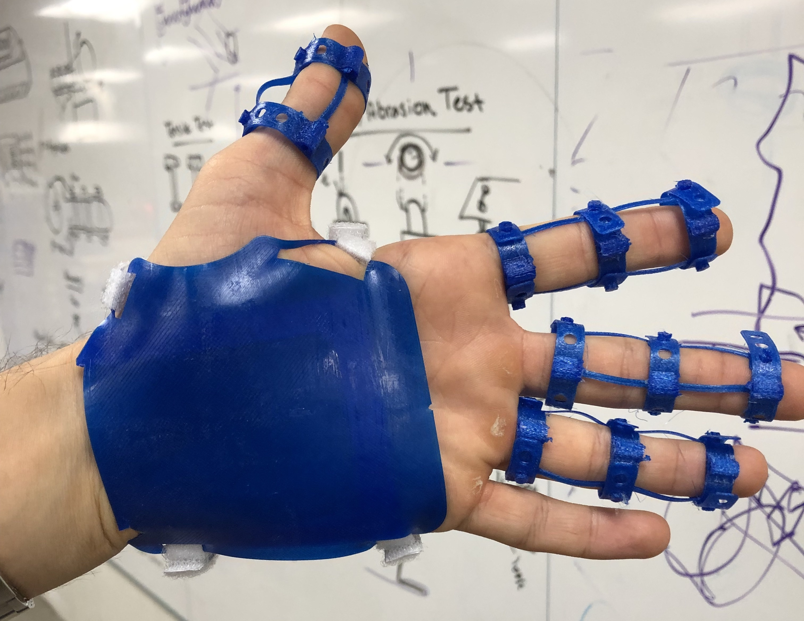

University Blog
A project log, online:
At Sparthan, we believe that lowering the barriers for hand prosthetics and exoskeleton design is a key factor in enabling talented engineers and makers to design the best medical robotic hands. For this reason, serving universities and their students is a top priority for us.
We partnered with a team of students at U.C. Berkeley, following their design process week by week. We hope that seeing their project come to life will inspire makers and students to come up with their own solutions.
This blog will be updated with fresh content weekly. Scroll down to see designs and iterations that have been previously developed.
Authors
The team
Hello! We are a team of students from U.C. Berkeley, working on designing devices for the human body.
In October 2018 we have been approached by the development team at Sparthan Robotics to collaborate on a exoskeleton project. The goal we were asked to work towards was to create a low cost, 3D printable exoskeleton glove that could integrate with the Sparthan module, allowing patients with lower grip strength to regain independence of movement.
February 2nd, 2019
Back to the drawing board
This week's work revolved around creating a better action plan to tackle manufacturing challenges for our product. We produced a rough product architecture plan to help determine the best strategy going forward, before starting again the iterative prototyping process. Taking time to plan is crucial when going into manufacturing, as mistakes are easily more expensive and more time consuming than during the Research and Development phase.
Geometry sketch
The conceptual design work involved creating a low-resolution geometry sketch of our design to better understand its spatial constraints.
Schematics flowchart

This chart highlights the main components of our product, visualizing the flow of materials, information and energy through the design.
January 23rd, 2019
New beginnings
Today it's the start of the new academic year and we have been selected as part of the Spring 2019 Global Product Development (GPD) cohort at U.C. Berkeley. This course is specifically designed to help scaling hardware-based project from a prototype stage to a more mature and manufacture-ready design.
Global Product Development:
Having the opportunity to refine our project and have it ready for manufacturing is thrilling and we will be working hard for it.
December 5th, 2018
Final touches:
This week we presented a demo of our design at the Jacob's Institute for design at U.C. Berkeley
Functional prototype
We created a functional prototype to show how our design will work. The aesthetics are lacking, but we hope to convey the feeling for our product with a live demo.
Components Set
We designed a variable voltage power supply and connected all the components together, to create a self-contained first prototype that could be demoed.
Reflections and challenges:
Creating a final design was challenging and required some compromises in terms of aesthetics. We are very happy to see our project come to life for the first time and having a proof-of-concept prototype is great to find areas for improvement.
November 27th, 2018
Biomechanic analysis:
After testing our low resolution design we finalized the mathematical analysis of the system by conducting a biomechanic analysis of the finger working with the strings.
Force Diagram

A force diagram is a good way to visualize and calculate all the forces present in the device, while creating a simplified model of the hand.
Equations
We calculated the optimal angles for the string in order to avoid interactions with the finger.
The static equations can be used to approximate the stresses present on the device, solving a determined system of equations.
Reflections and challenges:
The mechanical analysis of the device can often be inaccurate if the model is overly simplistic. Testing the actual forces generated in our design will be a key point of next week's work.
November 16th, 2018
Iterative prototyping:
Last week's physical brainstorming helped us refine the ideas we had for building the exoskeleton. Now it's time to get the pieces together and start visualizing our ideas. Building a low resolution prototype of what we hope will be our final project is a great way to start a fast iteration cycle to understand possible problems and challenges.
Sparthan Module
Finally having access to one of the developer previews of the sparthan module is very intriguing. The module is very compact and can be programmed using both MicroPython and the Arduino IDE.
For our application we are only going to use 4 of the 5 available modules, but we'll need to design the glove around the module dimensions to avoid having a bulky prototype.
Low Res Prototype

We printed all the components of our low resolution prototype in a flexible 3D printable polymer (TPE). This material is stiffer than regular flexible filament while maintaining enough elasticity to wrap comfortably around the hand.
The aesthetics of the prototype are very rough, but this allows us to experience the feel and weight of all the functional components. This step is very helpful in making final adjustments before starting the design process to make it aesthetically pleasing.
Reflections and challenges:
Prototyping can be a long and iterative process. Approaching iteration cycles with a "fail fast, learn fast" attitude can help significantly reduce the time needed to refine a product. This week we finalized the functional design for a low resolution prototype and we experienced how difficult it could be to combine good looks with function.
November 5th, 2018
Physical Brainstorming:
After assessing the physical properties and limits of the 3D materials available to us, we decided to take our brainstorming to the next step, fabricating some of our ideas to better visualize their bio-mechanical behaviors.
Prototype V.0.0
The very first iteration of physical brainstorming focused on finding a way to fix the glove to the hand, by using adjustable rings that could be connected to flexible joints on the top of the finger. However, the length of the joints when the finger bends is not fixed and this caused the rings to slide on the user's finger, causing discomfort, partially caused by the hard plastic used for the rings.
Prototype V.0.1
The second version of our physical brainstorming looked very rough, basically just a flexible curl of soft 3D printed plastic that wrapped around the finger. A string was placed on the upper surface and when pulled it could straighten the finger, while the natural elasticity of the plastic provided grip strength. We noticed that we needed a way to provide additional grip strength and we decided to add an elastic band that run alongside the bottom of the finger. Zipties were added to have a quick and easy way to asses the best force application points along the axis of the finger
Prototype V.0.2
After noticing how freedom of movement in the hand was limited by this prototype we decided to redesign the attachment points to the fingers, ditching the flexible strip, which limited movement. We designed parametric CAD models of rings that could be adjusted to fit the different diameters along the fingers and presented routing holes at the top for the string tendon to pass through.
Prototype V.0.3
Using only 2 attachment rings proved to be quite uncomfortable due to the rubbing of the string on the knuckles. We added a third ring and added once again the rubber band on the bottom to provide the resting grip strength needed to grip objects firmly.
Reflections and challenges:
The physical brainstorming proved to be beneficial to our design process, helping us visualize complex bio-mechanical scenarios in a more efficient way. Last week's exploration of flexible 3D printing materials helped in sizing accurately our initial prototypes, saving time that could be used for brainstorming better mechanical solutions.
Using an elastic material to provide the grip strength necessary could solve the issue of having a bulky object around the hand, but is much more prone to fatigue and possible rupture. Finding better ways to solve this issue will be the main focus of next week prototyping session.
October 26th, 2018
Material selection and testing:
A parametric CAD model was developed for testing the plastic deformation of the flexible 3D printing material as a function of its cross sectional area
Seven test models were 3D printed, progressively increasing the width of the part 1 mm each time.
Each of the model was then tested to asses the force required to completely straighten the natural curvature.
Reflections and challenges:
This week's challenges included finding the proper sectional area of the flexible filament, BioFlex, to observe which was the optimal thickness to use for future prototypes. Another challenge was to find the correct thickness such that the material does not undergo plastic deformation and consequent fatigue.